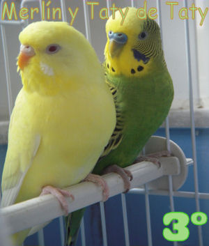
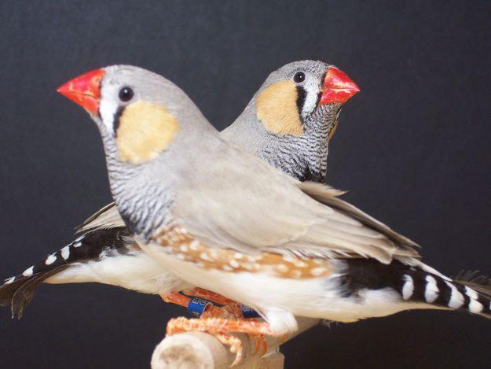
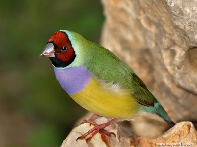
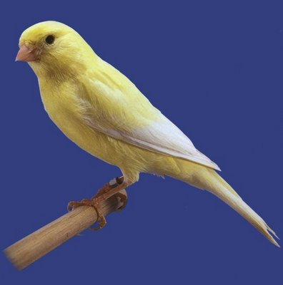
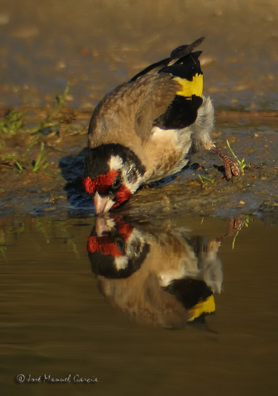
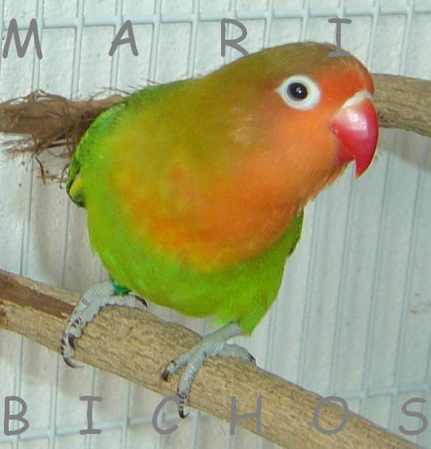

Aves domesticas
todo lo que debes saber
Bienvenido, aqui puedes encontrar todo lo que necesitas saber sobre las aves como mascotas, ya sea que te regalaron una o quieras comprar una para amenizar tu espacio.
Especies
| # | Nombre | Descripcion | Imagen |
|---|---|---|---|
| 1 | Periquito | El periquito es un ave de pequeño tamaño (19 cm), pero es un gran animal de compañía. |  |
| 2 | El diamante mandarin | Este pequeño pajaro exotico Australiano mide 10 cm midiendolo desde la punta del pico hasta el final de la cola. |  |
| 3 | El Diamante Gould | El Diamante Gould es un ave originaria del norte de Australia y habita en las praderas y zonas arboladas abiertas. Talla : 14 cm de longitud. |  |
| 3 | El canario | Los Canarios son simpáticos pájaros que parecen saludarnos a nuestro paso. |  |
| 3 | El jilguero | Los jilgueros tienen un canto melodioso que es capaz de combinar en una serie armónica notas agudas y graves. the Bird |  |
| 3 | El agaponi | El Agaporni es también llamado "Inseparable" o "Pájaro o del Amor", por su monogamia. |  |
Alimentación
Generalmente, para todas estas aves, la alimentación se basa en una mezcla de semillas, que puedes mezclar de forma natural o comprar un alpiste que ya venden especial para este tipo de aves. No está de más que le des un poco de fruta y verdura un par de veces a la semana.
Necesitas una jaula para tener a tus nuevas mascotas, el tamaño de esta dependera del tamaño y actitud de la especie que obtengas
No olvides tambien tener en cuenta que para algunas especies son necesarios cuidados extra, como por ejemplo para el Agaporni algo que debes de tener muy en cuenta es que no puedes comprar un solo agaporni, sino la pareja. Uno sin el otro no serían capaces de sobrevivir. Por lo que también deberás tener una jaula de mediano tamaño para que quepan los dos. Pero eso sí, no les gusta convivir con otras especies, sino ellos dos solos como una parejita feliz.
Lo mejor es pregunte que se necesita, en el lugar donde compres tu mascota.
Precios
- Especie
- Numero de individuos
- Lugar de la compra
- Servicios incluidos
- Accesorios incluidos